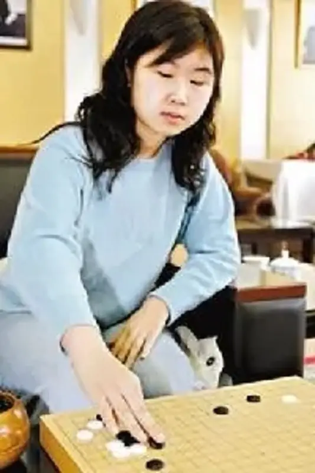

郑岩（1984年8月2日出生），中国黑龙江省人，职业围棋选手。她自幼展现出围棋天赋，1997年定为初段，1999年升为二段。郑岩在围棋领域取得了多项重要成就，是中国女子围棋界的佼佼者。
郑岩的棋风稳健且富有攻击性，善于在复杂局面中寻找机会。围棋界对她的评价较高，认为她在大赛经验和技术水平上都处于国内女子棋手的前列。她的夺冠不仅是个人的成功，也为广东女子围棋的发展注入了新的活力。
郑岩的丈夫是朱元豪，同样是一位围棋运动员，两人在围棋领域有着共同的追求和兴趣。